// recognition
Sebagian besar berangkat dari riset dan proyek Smart Agriculture & IoT berbasis Machine Learning, dipresentasikan dan dikompetisikan hingga tingkat internasional. Foto dokumentasi/sertifikat ditampilkan di samping tiap deskripsi.
Direktorat Jenderal Kekayaan Intelektual, Kementerian Hukum Republik Indonesia
Meraih pencatatan Hak Cipta (Nomor Pencatatan 001044570) atas nama Universitas Negeri Malang sebagai pemegang hak, untuk karya Program Komputer berupa website chatbot AI yang membantu menjelaskan konsep fisika secara interaktif kepada pengguna menggunakan Groq API.
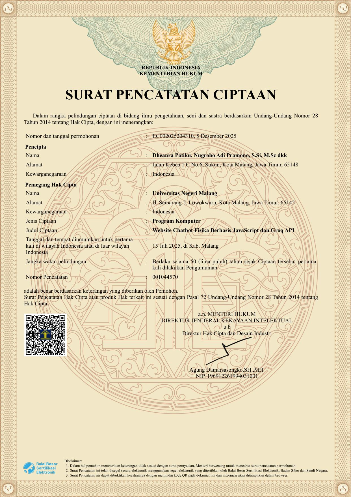
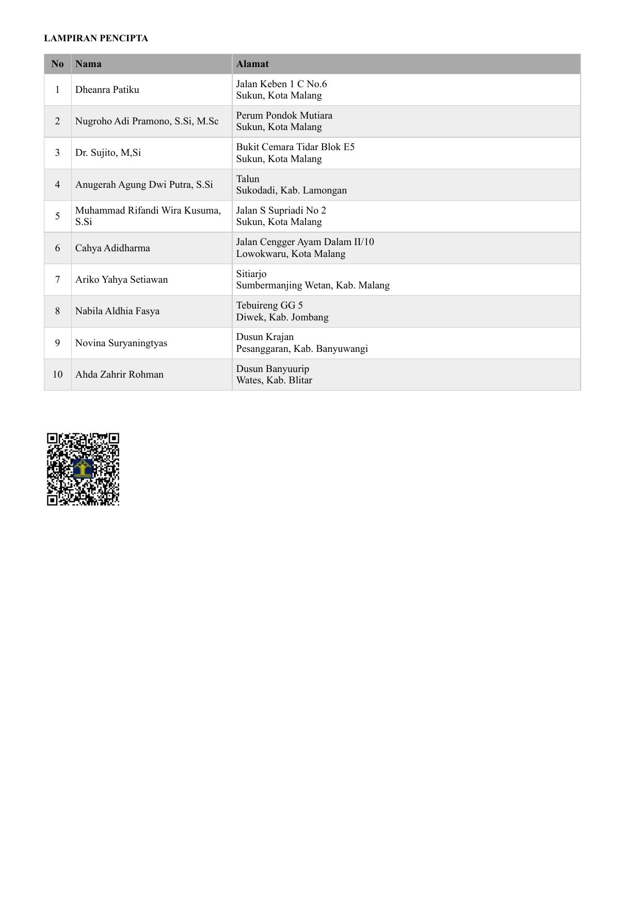
Faculty of Mathematics and Natural Sciences, State University of Malang
Mempresentasikan hasil penelitian skripsi mengenai pengembangan sistem Smart Agriculture berbasis Internet of Things (IoT) dan Machine Learning untuk memantau kondisi lingkungan pertanian secara real-time serta memprediksi kebutuhan penyiraman tanaman menggunakan ESP32, sensor lingkungan, dan model klasifikasi. Penelitian ini bertujuan meningkatkan efisiensi penggunaan air dan mendukung penerapan precision agriculture.
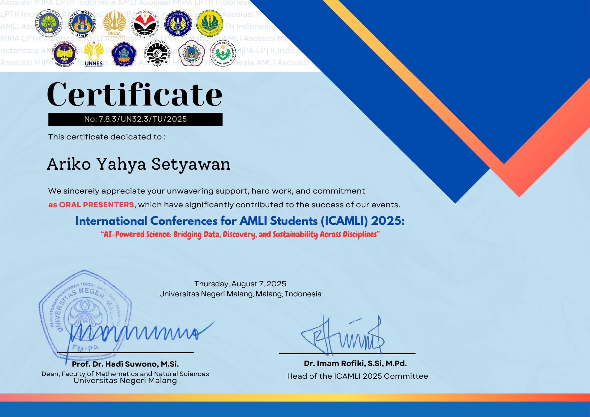
Sentosa Foundation, Nusantara Muda Community, Setara Prisma Nusantara & Universiti Putra Malaysia
Berkontribusi sebagai anggota tim dalam pengembangan dan pemrograman sistem Internet of Things (IoT) menggunakan ESP32, ESP32-CAM, sensor MQ-135, dan DHT11 untuk mendukung sistem deteksi dini kebakaran hutan berbasis Android yang mampu memantau kondisi lingkungan secara real-time dan mengirimkan notifikasi sebagai upaya mitigasi kebakaran hutan.
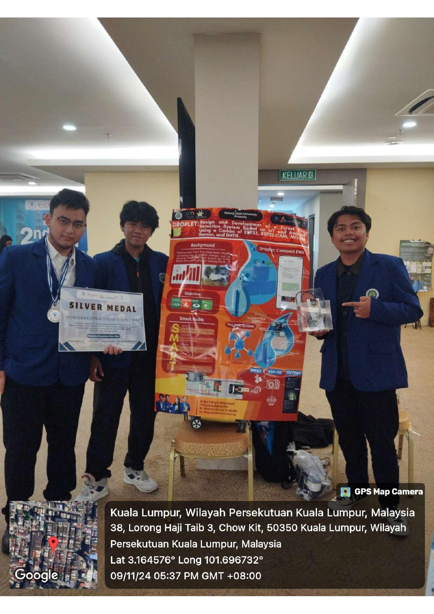
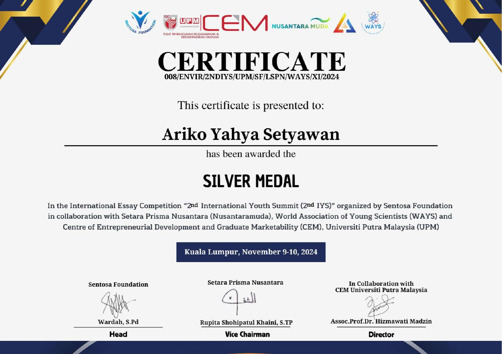
UKM Penalaran, Universitas PGRI Kanjuruhan Malang
Memimpin tim dalam perencanaan dan pelaksanaan proyek, mulai dari penyusunan konsep, penulisan esai, desain produk, hingga presentasi. Mengoordinasikan pembagian tugas dan memastikan proyek selesai sesuai tujuan yang telah ditetapkan.
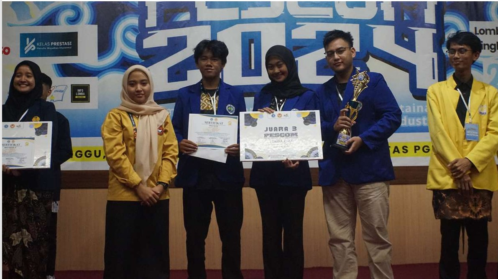
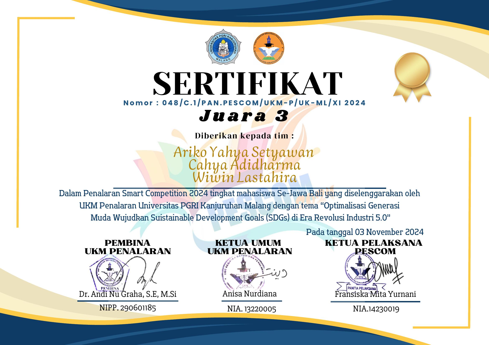
Himpunan Mahasiswa Fisika, Institut Teknologi Bandung (ITB)
Memimpin pengembangan GlucoSense, sistem pemantauan kadar glukosa berbasis Internet of Things (IoT) yang mengintegrasikan ESP32 dan sensor MAX30102 untuk pemantauan kesehatan secara real-time. Berperan dalam koordinasi tim, pengembangan solusi, serta presentasi inovasi hingga mencapai babak final.
Baca karya tulis lengkap (PDF) →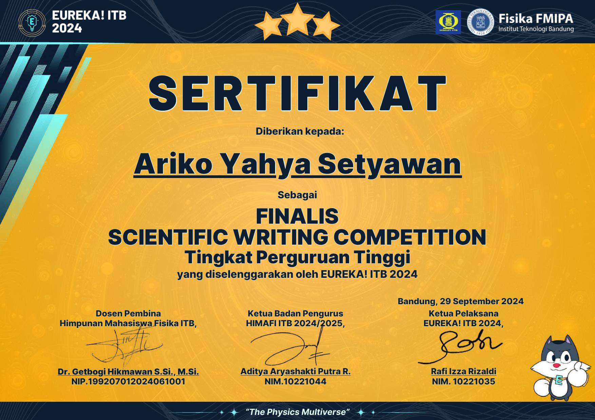
Exalters Student
Memimpin pengembangan Smart Agriculture Innovation, sistem monitoring dan kontrol budidaya Edelweiss berbasis Internet of Things (IoT) untuk mendukung konservasi melalui pemantauan kondisi lingkungan secara real-time, serta mengoordinasikan tim dan mempresentasikan solusi di hadapan dewan juri.
Buka sertifikat lengkap (PDF) →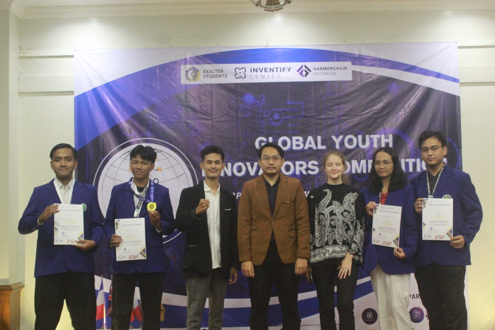
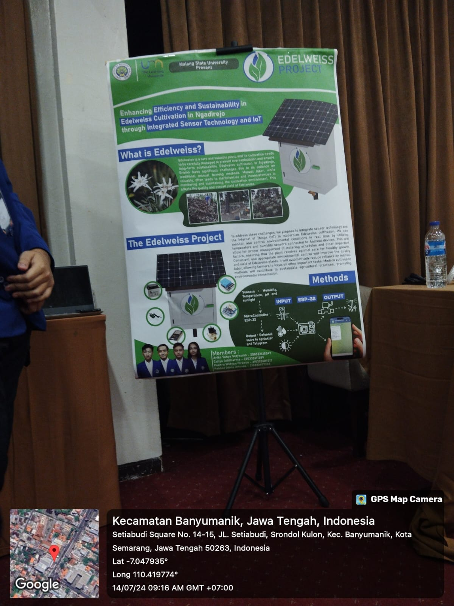
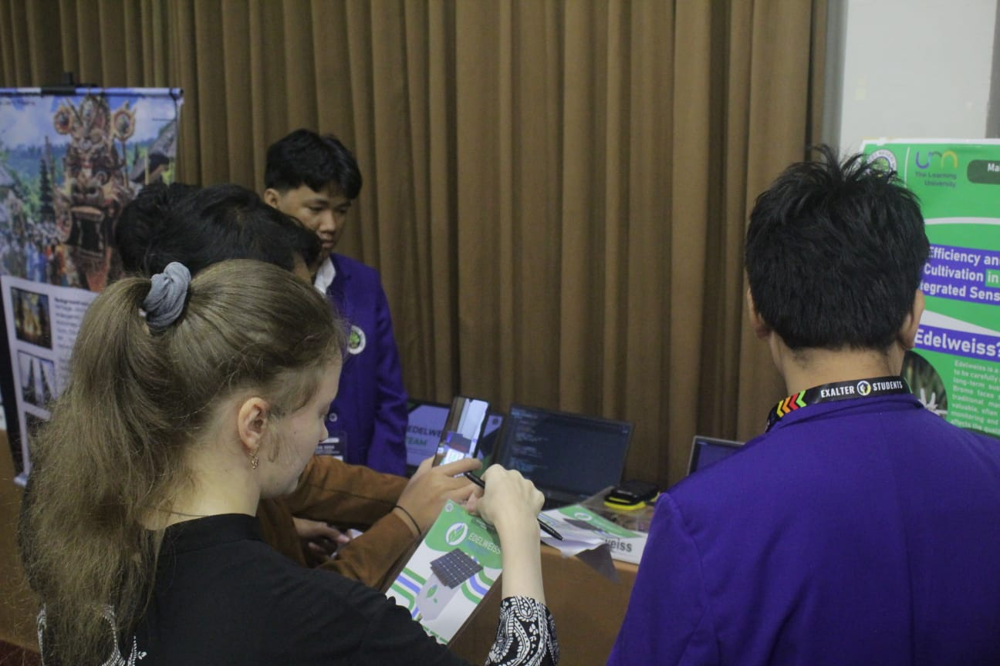
UIN Walisongo Semarang
Memimpin pengembangan DoveComm, konsep sistem komunikasi darurat offline berbasis Software Defined Radio (SDR) dan Artificial Intelligence untuk mendukung komunikasi saat jaringan telekomunikasi tidak tersedia. Bertanggung jawab dalam koordinasi tim, perancangan konsep dan metodologi penelitian, penyusunan karya ilmiah, serta presentasi proyek hingga meraih peringkat pertama pada kompetisi tingkat internasional.
Baca paper lengkap (PDF) →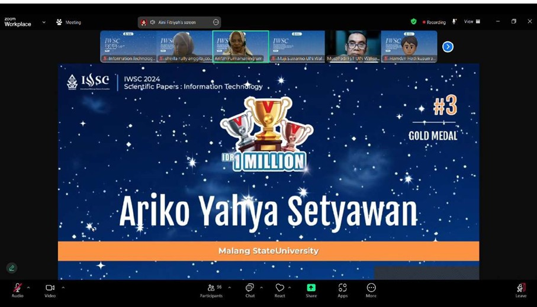
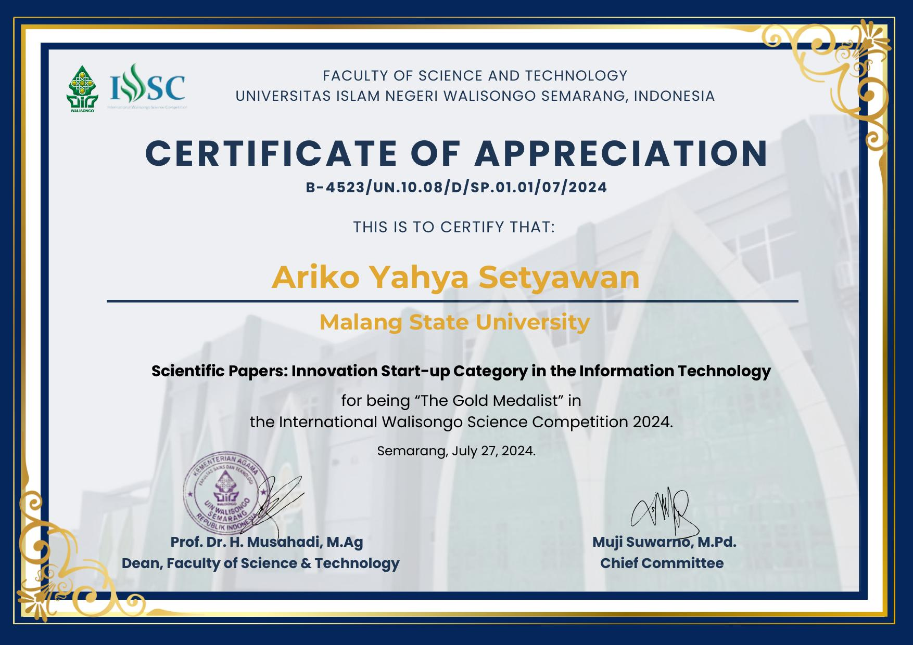